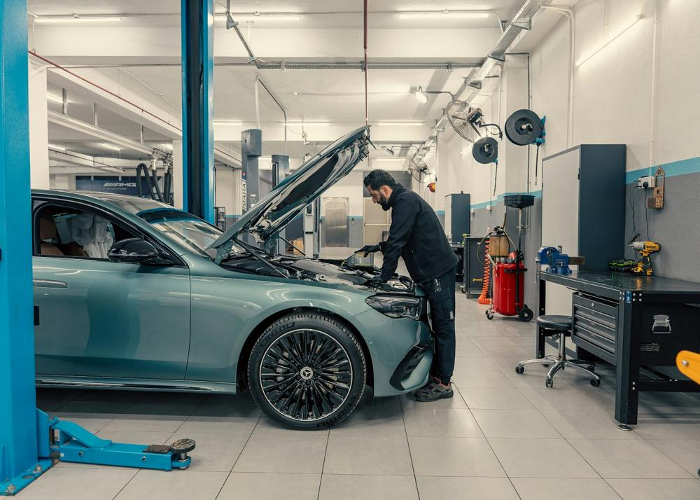
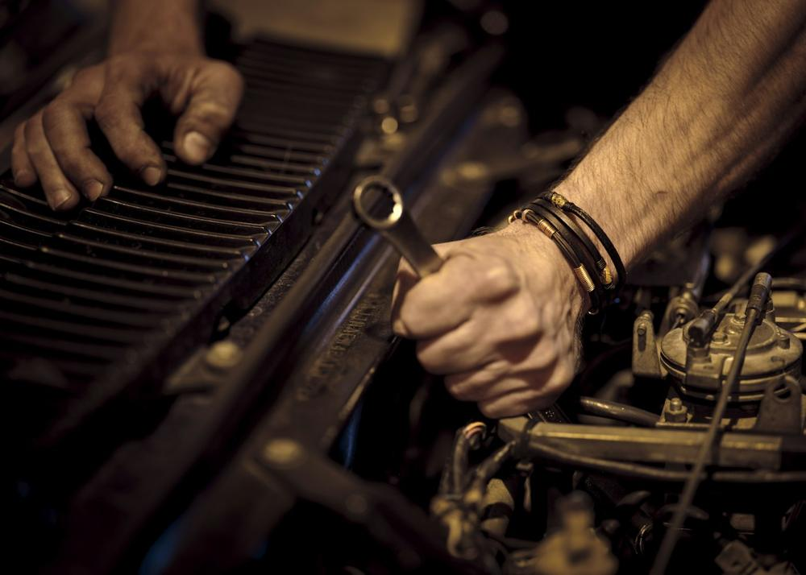
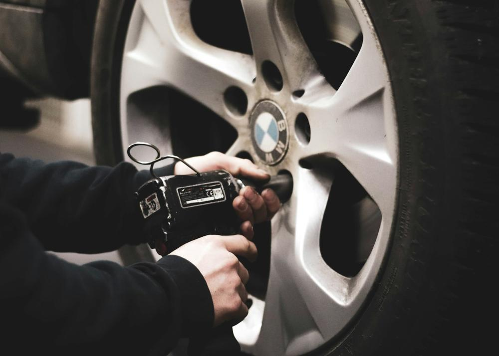

Revisão
Prevenção para rodar tranquilo.
MECÂNICA COM CONFIANÇA
Diagnóstico preciso, serviço transparente e uma oficina que respeita seu tempo.
Serviços
Mecânica geral para veículos leves, com orçamento aprovado antes do reparo.
Prevenção para rodar tranquilo.
Segurança em primeiro lugar.
Conforto e estabilidade.
O cuidado certo no tempo certo.
Tecnologia para achar a causa.
Conforto em qualquer trajeto.
Como funciona
Escolha um horário para trazer o carro.
Explicamos o que encontramos.
Só executamos após sua aprovação.
A oficina
Equipamento de diagnóstico e uma equipe que explica o que encontrou.




Nossa essência
Na Torque Garage, explicamos o problema antes de propor o reparo. Você acompanha orçamento, prazo e serviço com clareza.
Em destaque
Checklist do veículo antes do serviço.
Só o que é necessário, com clareza.
Orientações para seguir rodando bem.
Avaliações · 4.9/5
“Mostraram exatamente o que precisava ser feito e entregaram no prazo combinado.”
“Mandaram foto da peça gasta antes de trocar.”
“Preço justo e carro entregue lavado.”
Antes de começar
Sim. Você aprova o serviço antes da execução.
Atendemos a maioria dos veículos leves; consulte o modelo.
Vamos conversar
Informe o modelo e o sintoma. Agendamos a revisão.
Conversar no WhatsApp ↗